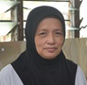
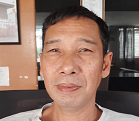
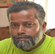

ORGANIZATION AND ADMINISTRATION OF RBDHAll policies and management of the RBDH are determined by a body known as the Selangor Orphan Education Organization Working Council. Members of the Working Council Committee are appointed from among individuals who are members of this Organization. Members of the Working Council Committee are appointed from among the members through the General Meeting every 2 years.The 40th General Meeting which met on 03 July 2022 has officially appointed the Working Council Members for the 2022-2024 session as follows:
Chairman
Deputy Chairman Tuan Haji Mohd Nasir bin Hassan (Chairman of the Administrative Council Committee) Honorary Treasurer: Y. Bhg. Tan Sri Dato' Haji Azman Shah bin Dato' Seri Haji Harun Honorary Secretary Tuan Haji Mohd Zahar bin Abdul Samad Honorary Assistant Secretary Tuan Haji Idris bin Ngah Members of the Working Council Committee Major (B) Haji Hasnan bin Hashim (Chairman of the Disciplinary and Safety Committee) Puan Hajah Hawa binti Anuar Shah (Chairman of the Education Committee) Dr. Zahrah bint Tawil (Chairman of the Health & Nutrition Committee) Tuan Haji Harun bin Mohd Noor (Fund Committee Chairman) Dr. Abdul Aziz bin Zakaria (Chairman of the Hamlet Community and Area Management Committee) YBhg. Prof. Dato' Dr. Abdullah Sani bin Mohamed YBhg. Dato' Abdul Nasser bin Abu Kassim Professor Dr. Khalib bin Abdul Latip Dr. Zainal Abidin bin Shaik Dali Tuan Haji Zailail bin Mohammad Mrs. Hajah Salmah Binti Sheikh Brix Mr. Noriyualsaid bin Dato' Shamsuddin Tuan Haji Abu Bakar bin Budin Tuan Haji Husain bin Menggong Tuan Haji Abdul Ghani bin Bakar Mr. Bahaman bin Abas Members of the Working Council Committee have decided to appoint 9 staff members to manage the administration and management of RBDH on a daily basis.RBDH 2022 Management StaffManagerZainun binti Sahlan Finance Officer
Ili Dayana binti A Hamid Administrative OfficerHasnizan binti Nazri Male Hostel WardenMohamad Arif Arham bin Mohamad Khairian Female Hostel Warden:*no photo*Poziah binti Ahmad Teacher Assistant / Library / ComputerGhazali bin Mohd Ali & Hasnizan binti Nazri Kitchen HelperMaznah binti Abdul Hamid DriverMohd Rashid bin Othman & Ghazali bin Mohd Ali General AssistantMohd Zaman bin Abdullah |
READING SIDE ما نَقَصَتْ صَدَقَةٌ مِن مالٍ، وما زادَ اللَّهُ عَبْدًا بعَفْوٍ، إلَّا عِزًّا
والصدقة تطفىء الخطيئة كما تطفىء الماء النار
"The best home among Muslims is a home where there are orphans who are treated well. And the worst house among the Muslims is the house where there is an orphan and he is treated badly." (Hadith Narrated by Ibnu Majah) |